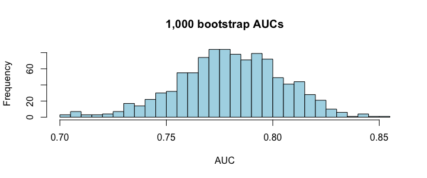

誤差の信頼区間
550 の M4 で、標本平均には信頼区間があると学びました。テストでの誤差も同じです。テスト 1 件ごとの二乗誤差の平均（= MSE）には、標準誤差があり、信頼区間が作れます。
set.seed(670) n <- 400 apt <- data.frame(area = round(runif(n, 25, 120)), rooms = sample(1:4, n, replace = TRUE, prob = c(.2, .4, .3, .1)), age = round(runif(n, 0, 50))) apt$price <- round(40 + 2.2 * apt$area + 12 * apt$rooms - 0.8 * apt$age + rnorm(n, 0, 25), 1) # 1000 USD set.seed(1) idx <- sample(n, size = 0.8 * n) train <- apt[idx, ] test <- apt[-idx, ] fit <- lm(price ~ area + rooms + age, data = train) sq_err <- (test$price - predict(fit, test))^2 # squared error for each test row mse_ci <- t.test(sq_err)$conf.int round(c(RMSE = sqrt(mean(sq_err)), lower = sqrt(mse_ci[1]), upper = sqrt(mse_ci[2])), 2)
RMSE は約 28.5 ですが、「約 24〜32 のどこか」と幅で見るのが正直です。Python では scipy.stats.t.interval が同じ計算をします。テストが 80 件しかないため、これだけの幅が出ます。テストが少ないほど、幅は広がります。
ブートストラップ
AUC や Precision のように公式がむずかしい指標でも、ブートストラップなら信頼区間が作れます。テストデータから、同じ件数を復元抽出して指標を計算し、これを何度もくり返して、ばらつきを見ます。
d <- as.data.frame(Titanic) # R's built-in Titanic table (2,201 people) ti <- d[rep(seq_len(nrow(d)), d$Freq), c("Class", "Sex", "Age", "Survived")] rownames(ti) <- NULL ti$Survived <- as.integer(ti$Survived == "Yes") set.seed(1) idx <- sample(nrow(ti), size = 0.8 * nrow(ti)) tr <- ti[idx, ] te <- ti[-idx, ] m <- glm(Survived ~ Class + Sex + Age, data = tr, family = binomial) p <- predict(m, newdata = te, type = "response") # probability of survival pred <- as.integer(p >= 0.5) auc <- function(y, s) { r <- rank(s); n1 <- sum(y == 1); n0 <- sum(y == 0); (sum(r[y == 1]) - n1 * (n1 + 1) / 2) / (n1 * n0) } set.seed(7) boot <- replicate(1000, { i <- sample(nrow(te), replace = TRUE); auc(te$Survived[i], p[i]) }) round(c(AUC = auc(te$Survived, p), quantile(boot, c(.025, .975))), 3) hist(boot, breaks = 30, col = "lightblue", main = "1,000 bootstrap AUCs", xlab = "AUC")

AUC の点推定は約 0.78 ですが、95% の範囲は約 0.73〜0.82。「0.78」より「0.73〜0.82」と報告する方が、現実に近い言い方です。
モデル比較：差はゆれより大きいか
モデル A（面積だけ）と B（面積・部屋数・築年数）を、同じ 5 分割で比べます。同じフォールドでの成績の差を見るのがコツです（対応のある差）。
set.seed(670) n <- 400 apt <- data.frame(area = round(runif(n, 25, 120)), rooms = sample(1:4, n, replace = TRUE, prob = c(.2, .4, .3, .1)), age = round(runif(n, 0, 50))) apt$price <- round(40 + 2.2 * apt$area + 12 * apt$rooms - 0.8 * apt$age + rnorm(n, 0, 25), 1) # 1000 USD set.seed(1) idx <- sample(n, size = 0.8 * n) train <- apt[idx, ] test <- apt[-idx, ] set.seed(2); folds <- sample(rep(1:5, length.out = nrow(train))) cv_fold <- function(formula) sapply(1:5, function(k) { f <- lm(formula, data = train[folds != k, ]) sqrt(mean((train$price[folds == k] - predict(f, train[folds == k, ]))^2)) }) A <- cv_fold(price ~ area) B <- cv_fold(price ~ area + rooms + age) round(rbind(A = A, B = B), 1) round(c(mean_diff = mean(A - B), sd_diff = sd(A - B)), 2)
A は B より平均で約 5 悪く、5 つのフォールドの差のゆれ（SD ≈ 1）の約 5 倍もあります。B の方が良いと言えます。では、役に立たない特徴（ただのノイズ）を足した B' はどうでしょうか。
set.seed(11); train$noise <- rnorm(nrow(train)) B2 <- cv_fold(price ~ area + rooms + age + noise) round(c(mean_diff = mean(B - B2), sd_diff = sd(B - B2)), 2)
差の平均は約 −0.24（B2 の方がむしろ少し悪い）で、ゆれ（SD ≈ 0.29）と同じくらいかそれ以下。この差では「B2 が悪い／良い」とは言えません。差が SD に埋もれるときは、同じとみなし、単純な方（B）を選びます。
決定木の Gini 不純度と、平均化の力
決定木は、データをできるだけ純粋なグループに分ける質問を探します。純粋さの目安が Gini 不純度：1 − Σ(各クラスの割合²)。1 クラスだけなら 0、半々なら 0.5（2 クラスの最大）です。タイタニックの生存で、性別で分けると不純度がどれだけ下がるか計算します。
gini <- function(y) { p <- prop.table(table(y)); 1 - sum(p^2) } g_all <- gini(ti$Survived) g_split <- function(by) sum(sapply(split(ti$Survived, by), function(y) length(y) / nrow(ti) * gini(y))) round(c(root = g_all, by_Sex = g_split(ti$Sex), by_Class = g_split(ti$Class), by_Age = g_split(ti$Age)), 3)
性別で分けると、不純度が 0.437 → 0.347 まで最も下がります（クラス 0.400、年齢 0.433 より大きな低下）。木は一番下がる質問（ここでは性別）を最初に選びます。
ランダムフォレストは、データを復元抽出で変えながら木をたくさん作って平均（多数決）します。なぜ良くなるのか。独立なゆれを平均すると、ゆれは小さくなるからです（標準誤差 = SD ÷ √n と同じ考え方）。
set.seed(1) one <- rnorm(5000) # one noisy predictor avg25 <- replicate(5000, mean(rnorm(25))) # the average of 25 noisy predictors round(c(sd_one = sd(one), sd_avg25 = sd(avg25), theory = 1 / sqrt(25)), 3)
相関 ≠ 因果
ML は予測が得意ですが、原因は教えてくれません。2 つの変数が強く相関していても、第三の変数（交絡因子）が両方を動かしているだけかもしれません。気温が、アイスの売上と水難事故の両方を増やす例を作ります。
set.seed(8) temp <- rnorm(300, 25, 5) ice <- 3 * temp + rnorm(300, 0, 6) swim <- 2 * temp + rnorm(300, 0, 6) # swimming accidents: depends only on temperature round(cor(ice, swim), 2) # strong correlation! r_ice <- resid(lm(ice ~ temp)); r_swim <- resid(lm(swim ~ temp)) round(cor(r_ice, r_swim), 2) # after removing temperature
アイスと水難事故の相関は約 0.8 と強いのに、気温の影響を取り除くとほぼ 0（約 0.1）です。アイスを禁止しても、事故は減りません。